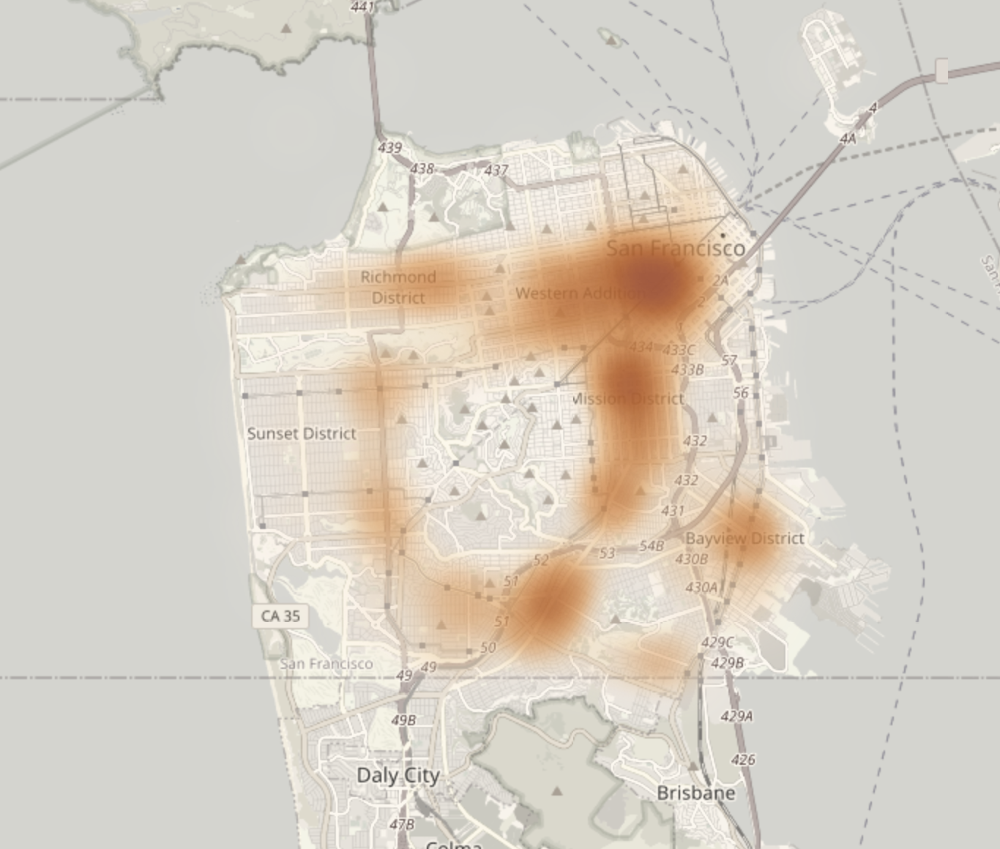

StopAtlas examines how traffic stops vary across locations in USA(taking San Francisco as the first case), asking not only where and why stops occur, but also how enforcement outcomes differ.
By connecting location, reason for stop, and post-stop actions, we aim to uncover patterns that suggest differences in policing intensity and decision-making across contexts.
